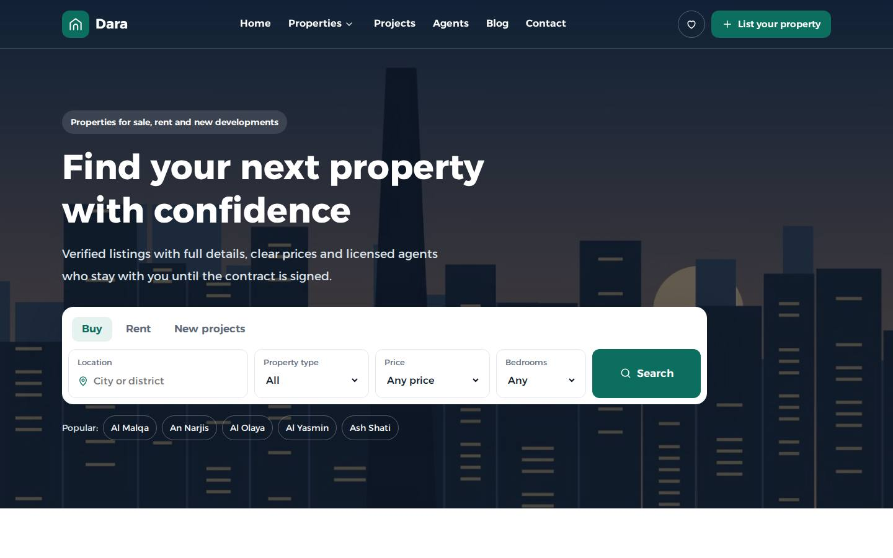
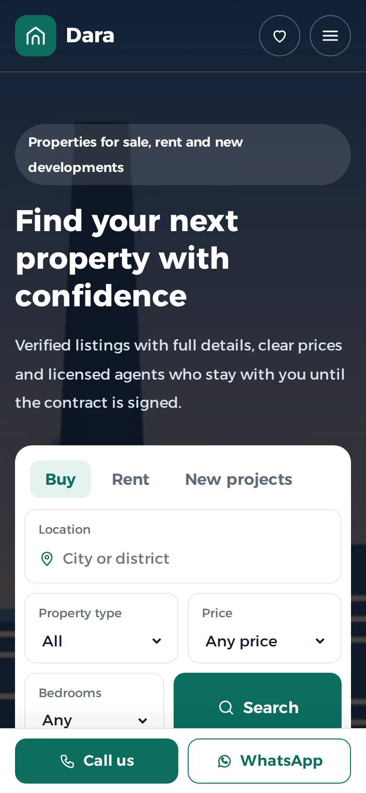
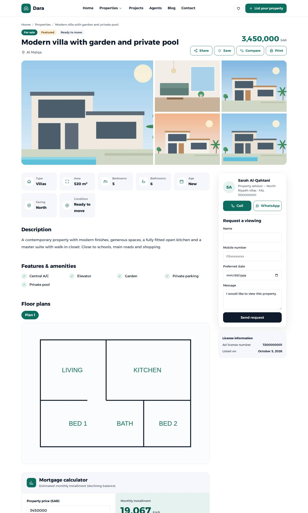
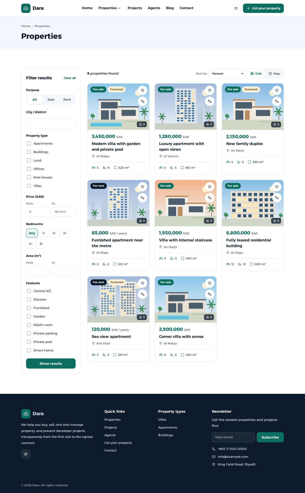

Dara: Real Estate WordPress Theme
Thank you for choosing Dara. This guide explains how to install the theme, import the demo, and manage properties, projects, agents and leads.
Dara is a fast, bilingual (Arabic RTL / English LTR) real estate theme for brokers, agencies and developers. Its features:
- Property listings with advanced search, filters and a map view.
- Developer project pages with units, payment plans and construction progress.
- Agent profiles.
- Cache-friendly lead forms.
- Ten Gutenberg section blocks.
- A mortgage calculator.
- Property comparison and favorites.
- Schema.org structured data.
It ships no jQuery and no CSS framework. Each page loads only the CSS it needs.


Requirements
- WordPress 6.3 or newer (tested up to 6.8)
- PHP 7.4 or newer (PHP 8.1+ recommended)
- The bundled Dara Core plugin (required for properties, projects, agents, search, leads and blocks)
- Recommended: a caching plugin and image compression (WebP)
Package contents
| File | What it is |
|---|---|
Theme/dara.zip | The theme. Upload this in Appearance → Themes → Add New → Upload. Dara Core is bundled inside it. |
Theme/dara-child.zip | Child theme, for your own CSS and template changes (optional). |
Plugin/dara-core.zip | The Dara Core plugin, in case you prefer to install it manually. |
Plugin/dara-pro.zip | Dara Pro: blocks, demo importer, mortgage calculator, comparison and Google Maps. Included in marketplace downloads. For direct purchases, Dara Pro is installed automatically when you activate your license. |
Documentation/ | This guide. |
Licensing.txt | License information. |
dara.zip, not the whole package. Uploading the main download gives the error "The package could not be installed. The theme is missing the style.css stylesheet."Installation
1. Install the theme
- Go to Appearance → Themes → Add New → Upload Theme.
- Choose
dara.zip, click Install Now, then Activate.
2. Install Dara Core
After activation, a notice says "Dara needs the Dara Core plugin."
- Click Install and activate Dara Core. The theme installs the bundled plugin and takes you to the demo importer.
- If your host does not allow direct file writes, upload
Plugin/dara-core.zipin Plugins → Add New → Upload Plugin instead.
3. Permalinks
Go to Settings → Permalinks and choose Post name. Property links then look like /properties/modern-villa/.
4. Child theme (optional)
If you plan to edit CSS or templates:
- Install
dara-child.zipand activate it. Dara (the parent) must stay installed. - Your Customizer settings are stored per theme. Set them up after activating the child theme, or export and import them with a Customizer export plugin.
License activation
If you bought Dara from muhamedeid.com or Mansoura Host, activate your license key to unlock premium features and automatic updates. Marketplace copies (ThemeForest) do not need a key.
- Go to Properties → License.
- Paste the key from your purchase email (
DARA-XXXXX-XXXXX-XXXXX-XXXXX) and click Activate. - Dara Pro is then downloaded and activated automatically. Your copy is built for your license, so it only works on your activated domain. Do not copy it to other sites; use Reinstall Dara Pro on each licensed site instead.
- One key works on one live domain.
localhostandstaging./dev.subdomains are free and don't use the key. - All features work for 14 days after installation, so you can build the site before activating.
- Moving to a new domain: click Deactivate on this site on the old site (or "Reset domains" in your client area), then activate on the new one.
- When updates and support expire, every feature keeps working. Only new versions stop until you renew.
Demo content
Go to Properties → Demo content. Choose:
- Arabic or English demo content.
- Whether to set the home page and blog page.
- Whether to create the menus.
Then click Import. In a few seconds it adds the following:
- 8 properties.
- 2 projects.
- 2 agents.
- 2 developers with logos.
- Property types, cities and districts.
- Blog posts.
- Images.
- The pages Home, Blog, Contact, List your property, Favorites, Compare and Developers.
Remove demo content deletes everything the importer created. It also restores your previous home page, menus and settings. Content you created yourself is never touched.
With WP-CLI you can import or remove the demo from the command line:
wp dara demo import --lang=en
wp dara demo removeBuilding the home page
There are two ways to build the home page. Use whichever you prefer.
- Blocks (recommended).
- Edit the Home page in the block editor and add or rearrange the Dara blocks.
- The pattern Real estate home page inserts the full layout in one click.
- The pattern Listings landing page is a ready landing page.
- Customizer.
- If the static front page has no Dara blocks, or you show latest posts, the home sections come from Appearance → Customize → Dara theme → Home: ….
- Each section can be shown or hidden.
Empty block fields fall back to the Customizer values, so the two methods share defaults.
Dara blocks
All blocks are in the Dara real estate category of the inserter. They render on the server and add no JavaScript to the front end.
| Block | Options |
|---|---|
| Hero & search | Background image, label, title, text, show search, default search tab (buy / rent / projects) |
| Properties grid | Title, number of items, purpose (sale / rent), property type, featured only, type chips, "view all" button |
| Property types | Title and label. Shows your property types with icons and counts. |
| Developer projects | Title, text, number of projects |
| Services | Repeater: icon, title, text, link |
| Image & checklist | Image, title, text, points, badge, button |
| Agents | Title, number of agents |
| Latest posts | Title, number of posts |
| Mortgage calculator | Title, text, default price |
| Call to action | Title, text, button text and link |
Blocks are provided by Dara Core and appear when a Dara theme (or child theme) is active.
Properties
Go to Properties → Add New.
Title, content and featured image
- The title is the property name.
- The content is the description.
- The excerpt is the short line shown on cards.
- The featured image is the card and gallery cover. Use 1200×800 or larger.
Property details
| Field | Notes |
|---|---|
| Purpose | For sale / For rent. Rentals also take a rent period (yearly, monthly, daily). |
| Price | Numbers only. Leave it empty to show "Price on request". |
| Area, bedrooms, bathrooms | Shown on cards and used by the filters |
| Property age, facing, condition | Shown in the facts table |
| Featured property | Featured properties get a badge and can be shown on the home page |
| Agent | Leads go to this agent. When left empty, the default contact from the plugin settings is used. |
Gallery, floor plans and video
- Add photos with Add images and drag to reorder them.
- For floor plans, the image caption becomes the floor name (for example "Ground floor").
- The video field accepts a YouTube or Vimeo URL. The player loads only when it is clicked.
Location
- Enter the address, latitude and longitude. To get the coordinates, right-click the location in Google Maps and click them to copy.
- Nearby places are entered one per line.
- The map uses OpenStreetMap by default, or Google Maps if you choose it (see Customizer options). Either way it loads only when it scrolls into view.
Taxonomies
- Types: villa, apartment… Each type has an icon option.
- Cities: hierarchical, city → district.
- Features: pool, elevator…
Archive and filter URLs: /properties/, /property-type/villas/, /property-city/riyadh/.

Search & filters
The properties page filters by the following, and every filter combination has its own URL that can be shared:
- Purpose, type and city.
- Price range, bedrooms and area.
- Features and keyword.
Results can be sorted by newest, price or area, and shown as a grid or on a map.

Developer projects
Projects → Add New covers the following fields:
- Developer.
- Status (off-plan / under construction / ready).
- Completion % (shown as a progress bar).
- Starting price, number of units, unit types and delivery date.
- Off-plan license.
- Brochure PDF and location.
- Amenities.
- Units table, payment plan and construction phases.
- Gallery.
Rows such as the units table use one line per row, with cells separated by |. For example:
2 bedrooms | 120 m² | from 650,000
3 bedrooms | 165 m² | from 890,000Developers
Developers group your projects by the company that builds them. Go to Projects → Developers and add one with the following:
- Name and description (the "About the developer" text).
- Logo.
- Year founded.
- Website, phone and email.
Then tick the developer in the Developers box when you edit a project. Each developer gets the following:
- A profile page at
/developer/developer-name/, with the logo, contact buttons, description and all of their projects. - A link from every project page ("Developed by …").
To list all developers, create a page with the Developers template.
Agents
Properties → Agents → Add New takes the following:
- Name (the title).
- Photo (the featured image).
- Bio (the content).
- Position (the excerpt).
- Phone, WhatsApp, email and license number.
Every agent gets a profile page with their listings. All agents are listed at /agents/.
Leads & forms
Viewing requests, project interest, contact and "list your property" forms are saved in the Leads admin menu and emailed to:
- The leads email from the plugin settings.
- The property's agent.
The forms work with full-page caching, so they have no per-user nonce. Spam is blocked by these methods:
- A hidden honeypot field.
- A signed timestamp that rejects bots submitting in under 3 seconds.
- A per-IP rate limit.
Page templates
Choose a template in the page editor under Page → Template.
| Template | Use |
|---|---|
| Contact | Contact details, office map and contact form |
| List your property | Form for owners who want to sell or rent |
| Favorites | Properties the visitor saved with the heart button (stored in the browser) |
| Compare properties | Side-by-side comparison of up to 4 properties |
| Full width (no title) | For landing pages built with blocks |
Mortgage calculator
The calculator appears on every property for sale. It can also be added anywhere with the Mortgage calculator block. Settings live in Customize → Dara theme → Mortgage calculator:
- Calculation method:
- Declining balance: the standard amortized mortgage.
- Flat rate (murabaha): the profit rate applies to the full amount each year.
- Default rate, down payment and term.
- Maximum term.
- Disclaimer.
Compare & favorites
- Every property card has a compare button. A bar at the bottom of the screen collects up to 4 properties and links to the Compare page.
- The comparison link can be shared:
/compare/?ids=12,15,18. - The compare page is set to noindex.
- The heart button saves a property to the visitor's favorites. No account is needed.
Customizer options
All options are in Appearance → Customize → Dara theme.
| Section | Options |
|---|---|
| Brand & header | Primary color, heading color, header button text and link |
| Home: hero & search | Background image, label, title, text, popular searches |
| Home: featured properties | Title, count, featured only |
| Home: property types / projects / services / why us | Titles, texts, items, images |
| Home: blog & call to action | Show or hide, titles, button |
| Contact & social | Phone, WhatsApp, email, address, office coordinates, social links |
| Footer | About text, newsletter, copyright ({year} and {site} placeholders), designer credit |
| Mortgage calculator | See above |
| Performance & maps | Emoji script, block CSS loading, map provider (OpenStreetMap or Google Maps), Google Maps API key, map tiles URL and attribution |
The logo and site icon are set in Customize → Site Identity.
Plugin settings
Properties → Settings contains the following:
- Currency label shown after prices (for example SAR, EGP, AED).
- Leads email.
- Office license and commercial registration numbers, shown in the footer.
- Default contact (name, phone and WhatsApp), used for properties without an agent.
Menus & logo
Appearance → Menus has two locations:
- Main menu. Dropdowns are supported.
- Footer: quick links.
If no menu is assigned, the theme shows a sensible default menu. The home hero uses a transparent header over the image. All other pages use a white header.
Languages & RTL
The text direction and layout follow your site language automatically. Dara is written in English and ships with a complete Arabic translation for both the theme and the plugin:
- Theme:
dara/languages/ar.mo. - Plugin:
dara-core/languages/dara-core-ar.mo.
To translate to another language, follow these steps:
- Open
dara/languages/dara.potanddara-core/languages/dara-core.potin Poedit or Loco Translate. - Save
{locale}.po/.mofor the theme anddara-core-{locale}.po/.mofor the plugin. - Put the files in
wp-content/languages/themes/andwp-content/languages/plugins/so updates don't overwrite them. For the theme, name themdara-{locale}.mo.
Multilingual sites work with WPML and Polylang. The header language switcher appears automatically when one of them is active.
Performance
On mobile, Dara scores 94–100 in Google PageSpeed (Lighthouse) with the demo content. The theme does the following:
- Splits CSS by template: about 26 KB core plus a small page bundle, minified.
- Uses one deferred vanilla JavaScript file.
- Self-hosts a variable font with a single preload.
- Preloads the largest image on each page.
- Loads the map library and video player on demand.
- Loads block CSS only where blocks are used.
For best results:
- Use a page cache (or server cache).
- Serve images as WebP.
- Keep the hero image under 250 KB.
Avoid "combine JS/CSS" options in optimization plugins. The theme already loads per-page bundles.
Child theme & customization
- CSS: add your rules to
dara-child/style.css. It loads after the theme styles. - Templates: copy any file from
dara/to the same path indara-child/and edit it there. For example, copytemplate-parts/cards/property.phpto change the property card. Updates won't overwrite your copy. - Colors: prefer the Customizer. The theme uses CSS variables (
--primary,--ink…) that you can also override in CSS. - Development: the full source (unminified CSS and JS) is included. Define
SCRIPT_DEBUGastrueinwp-config.phpto load the unminified files.
Hooks for developers
| Hook | Type | Description |
|---|---|---|
dara_lead_created | action | ( $lead_id, $data ). Runs after a lead is saved, for example to send it to a CRM. |
dara_setting | filter | ( $value, $key ). Filters a plugin setting. |
dara_agent | filter | ( $agent, $post_id ). Filters the contact shown for a property. |
dara_schema | filter | ( $data, $post_id ). Filters the JSON-LD data for properties and projects. |
dara_output_schema | filter | Return false to disable the JSON-LD output (for example when an SEO plugin handles it). |
dara_currency_code | filter | ISO currency code used in structured data. Default: SAR. |
dara_css_bundles | filter | The CSS bundles loaded on the current page. |
The following example sends every lead to a webhook:
add_action( 'dara_lead_created', function ( $lead_id, $data ) {
wp_remote_post( 'https://example.com/webhook', array( 'body' => $data ) );
}, 10, 2 );FAQ & troubleshooting
Property pages show "Page not found"
Go to Settings → Permalinks and click Save to refresh the rewrite rules.
Forms send but no email arrives
Many hosts block PHP mail. Install an SMTP plugin. Leads are always saved in the Leads menu, even when email fails.
The map is empty
Check that the property has a latitude and longitude. If you use Google Maps, check the following:
- The API key has the Maps JavaScript API enabled.
- Billing is active on the Google Cloud project.
- Your domain is allowed in the key's restrictions.
If you use OpenStreetMap and get high traffic, set a commercial tile provider URL in Customize → Performance & maps.
The home page shows my latest posts
Go to Settings → Reading, choose A static page and select Home. The demo importer can also do this for you.
Prices show the wrong currency
Set the currency label in Properties → Settings.
Will updating the theme remove my changes?
Theme updates replace the theme files, so any edits made inside dara/ are lost. Your content and Customizer settings are kept. Put code changes in the child theme.
Changelog
1.8.0 (theme) / 1.5.0 (Dara Core) / 1.0.0 (Dara Pro)
- New Dara Pro plugin: blocks, patterns, demo importer, mortgage calculator, comparison and Google Maps moved out of Dara Core and the theme.
- Without Dara Pro, the home page falls back to the Customizer sections.
1.7.0 (theme) / 1.4.0 (Dara Core)
- License activation per domain with automatic updates (direct purchases).
1.6.0 (theme) / 1.3.0 (Dara Core)
- Developers: logo, contact details, profile pages and a directory page template.
- Google Maps as an alternative map provider.
- WP-CLI commands to import and remove the demo.
1.5.0 (theme) / 1.2.0 (Dara Core)
- Gutenberg blocks and block patterns moved into Dara Core.
- One-click install of the bundled Dara Core plugin.
- Child theme.
- WordPress Coding Standards and Theme Check pass.
- English documentation.
1.4.x
- Property comparison.
- Alexandria variable font.
- Mortgage calculator (declining balance and murabaha).
1.3.x
- Ten Gutenberg section blocks and patterns.
- Agents archive and profiles.
- One-click demo import and removal.
1.0.0
- Initial release.
Credits & license
- Theme and plugin code: GNU GPL v2 or later.
- Alexandria font: SIL Open Font License 1.1.
- Leaflet 1.9.4: BSD 2-Clause.
- Map data © OpenStreetMap contributors (ODbL).
- Icons: original inline SVGs (GPL).
- Demo images: original illustrations made for Dara (GPL). They are for preview only.
Need help? Email info@mansourahost.com or contact us through the marketplace item page. Please include your purchase code, your WordPress version, your PHP version and a link to the page with the problem.
Dara is designed and developed by Mansoura Host. © 2026 Mansoura Host.